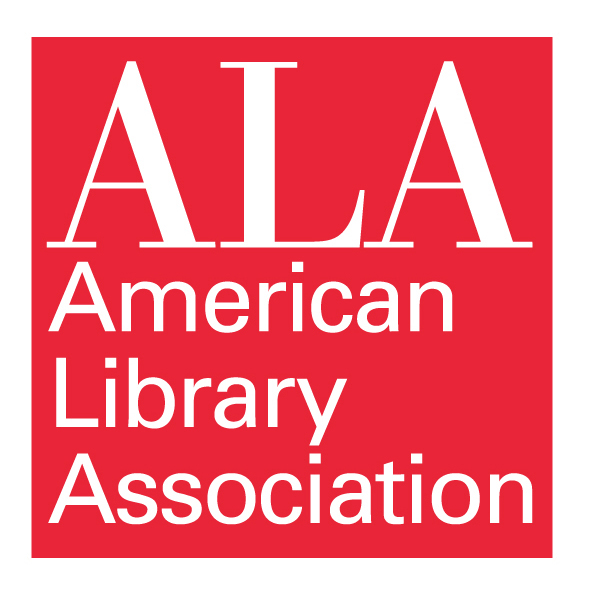
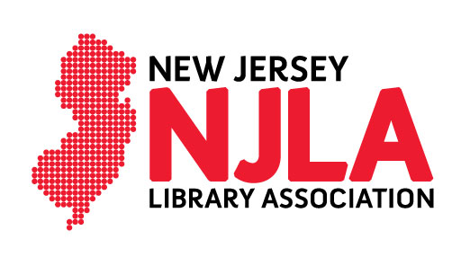
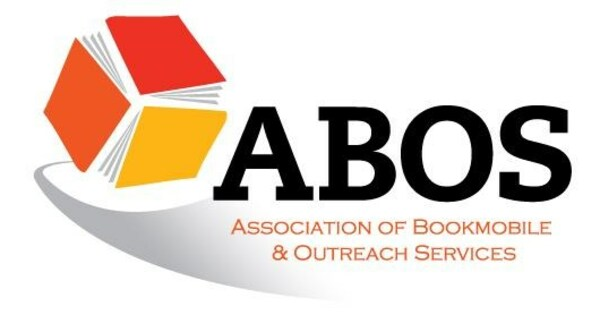

Associations
Library of Congress

I worked with the Library of Congress for my Capstone, but they have a lot of volunteer opportunities! You can find out more here!
The Library of Congress is the largest library in the world, with millions of books, films and video, audio recordings, photographs, newspapers, maps and manuscripts in its collections. They preserve and provide access to a rich, diverse and enduring source of knowledge to inform, inspire and engage the publin in intellectual and creative endeavors.
American Library Association (ALA)

I have been a student member of the ALA since May 2023, and the amount of events, newsletters, webinars, and resources they offer is beyond crucial for any aspiring librarian. I personally recommend checking out their Divisions, which are specialized networks within the ALA!
The ALA's mission is "Empowering and advocating for libraries and library workers to ensure equitable access to information for all." Their memberships are open to individuals, organizations, non-profits, and businesses interested in working together to change the world for the better through libraries and librarians.
New Jersey Library Association (NJLA)

I joined the NJLA as a student last October (2025). While I haven't engaged too much with the organization, they have a variety of resources on their website. I personally really like their career center, which is a great tool for finding jobs, scholarships, internships and more!
NJLA is the oldest and largest library organization in New Jersey. They advocate for library services for New Jersey residents, provide education and networking opportunities for library staff, and support intellectual freedom and access to books, music, movies, and information.
Association of Bookmobile and Outreach Services

I joined ABOS in August 2025 as a student. Their main focus is outreach, including forums and training, but they also host an annual conference on library outreach topics that is very interesting.
ABOS is the professional organization for outreach staff, and is inclusive in celebrating all forms of library outreach. Their mission is to support and encourage library staff and leadership to provide quality bookmobile and outreach services to meet diverse community needs. They strive for inclusion and equity while working to extend relevant and responsive services to those who face barriers to library access.